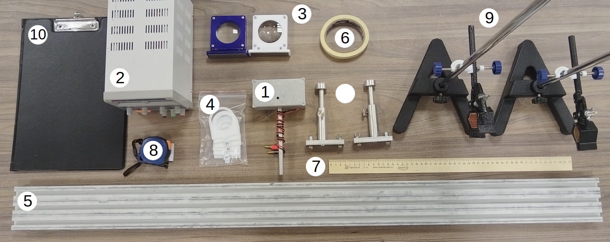
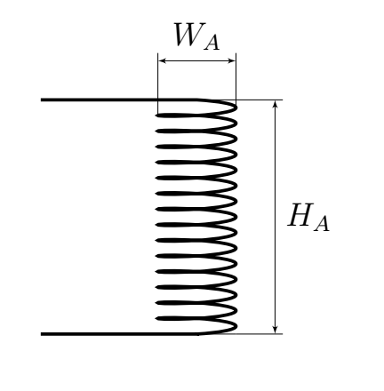
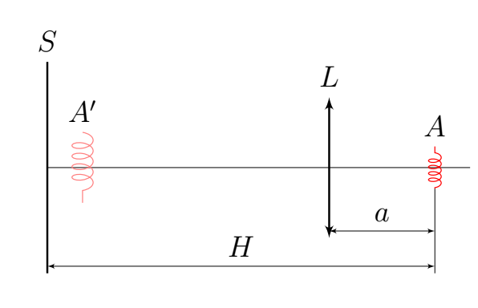
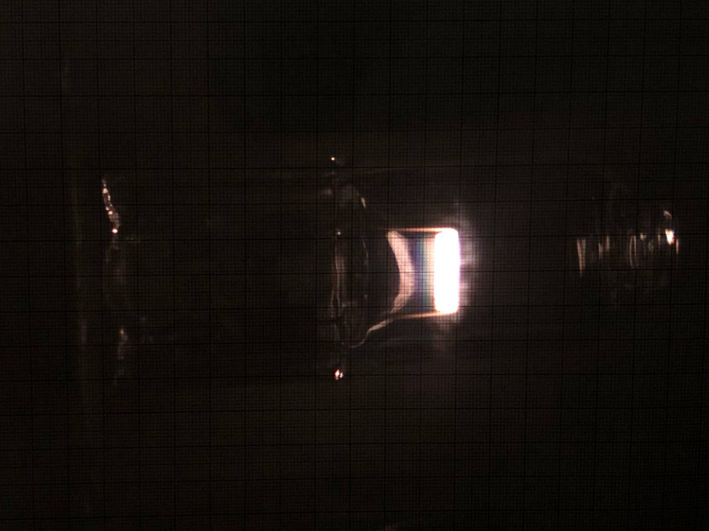
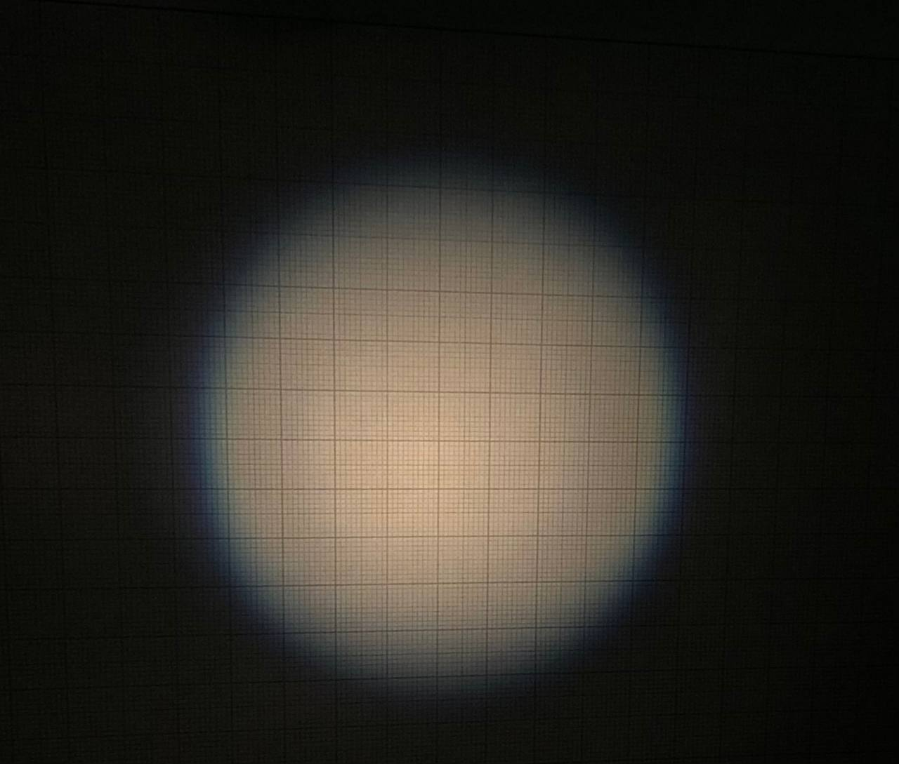
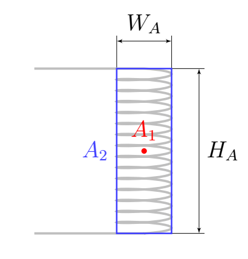
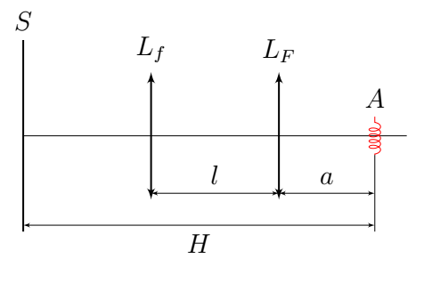
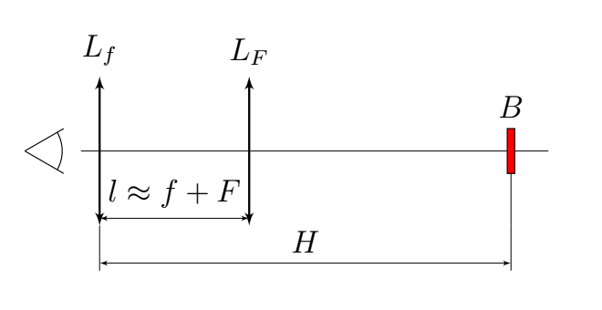

X23 (2023) — English translation

Incandescent lamp in housing Constant voltage source Two lenses with stands for the optical bench. A set of 9 diaphragms, the diameters in millimeters are indicated on them. Optical bench Masking tape Wooden ruler Tape measure Two tripods with claws Tablet for fixing paper
Research into human vision and the development of photographic technologies inevitably involve the study of focusing images using converging lenses. In this work, the light source is a spiral inside an incandescent lamp. Let's denote its diameter as $W_A$, height as $H_A$ and the number of turns as $N_A$.

Attention! The problem does not require error estimation. Attention! Use a personal lamp to illuminate your work area. Attention! Do not remove the lamp wires from the terminals of the DC voltage source yourself. To power the lamp, use a constant voltage source $U=9.0~\text{В}$. When the lamp is working correctly, only the filament filament glows (if it is not working correctly, the inner surface is covered with a light sediment, and therefore the light bulb “glows” completely). Position the lamp so that the filament filament is vertical.
Attention! Use a personal lamp to illuminate your work area.
Attention! Do not remove the lamp wires from the terminals of the DC voltage source yourself.
To power the lamp, use a constant voltage source $U=9.0~\text{В}$. When the lamp is working correctly, only the filament filament glows (if it is not working correctly, the inner surface is covered with a light sediment, and therefore the light bulb “glows” completely).
Position the lamp so that the filament filament is vertical.
The notation chosen in this part is valid throughout the subsequent problem. Let us consider an optical scheme consisting of a non-point source $A$, a lens $L$ and a screen $S$. In the figure, $A'$ indicates the image of the source $A$. In the simplest camera, instead of a screen $S$, a matrix of photosensitive elements, for example, photodiodes, is used.

We denote by $L_F$ the lens with a larger focal length, and the focal length itself by $F$. A lens with a shorter focal length is correspondingly $L_f$, its focal length is $f$.
With sufficiently large $H$ on the screen, it is possible to focus the image in two positions: close focusing - the position with a smaller $a$ and far focusing - a position with larger $a$.
The method for determining the focal length of a lens, discussed in paragraph $\textbf{A1}$, in any case, has a significant drawback: there is no formal criterion for a “focused image”. In this part, we will complement the method and rid it of this shortcoming by considering the physics of inaccurate focusing and the concept of sharpness. This part uses only lens $L_F$. Distance $H \approx 1.20~\text{м}$. Let $a_0$ denote the distance $a$, corresponding to close focusing. By changing the distance $a$ in the vicinity of $a_0$, you can get images of varying degrees of blur on the screen (examples of a clear and very fuzzy image are shown in the photographs below). Also, the blurring of the image is affected by the shape and diameter of the diaphragm - a screen with a hole that covers part of the lens.
Clear Image

Fuzzy image

First of all, let's study the effect of aperture on blur.
Now let's look at how focusing error affects blur.
Now let's study how the shape of even an out-of-focus image is related to the shape of the source.
The boundary of a fuzzy lamp image cannot be accurately described without considering the distribution of light intensity across the screen, so first we consider two simplified models of a light source: In the first model, the source $A_1$ is a point source and is located in the middle of the incandescent lamp spiral. The border of the image created by it will be denoted by $\Gamma_1$. In the second model, the source $A_2$ is the boundary of the spiral section, that is, the source is a rectangle with dimensions $W_A \times H_A$. Consider that this source shines equally brightly along its entire perimeter. We denote the border of the image from it $\Gamma_2$. Our task is to “combine” these models. Let the “combined” source create the image boundary $\Gamma$. Each specific point $\Gamma$ corresponds to a ray $B'$ emerging from the center of the image and passing through it. We will assume that the boundary point $\Gamma$ is located in the middle between the points $\Gamma_1 \cap B'$ and $\Gamma_2 \cap B'$.
Our task is to “combine” these models. Let the “combined” source create the image boundary $\Gamma$. Each specific point $\Gamma$ corresponds to a ray $B'$ emerging from the center of the image and passing through it. We will assume that the boundary point $\Gamma$ is located in the middle between the points $\Gamma_1 \cap B'$ and $\Gamma_2 \cap B'$.
Sources $A_1$ and $A_2$.

This part uses both lenses. Distance $H \approx 1.20~\text{м}$. By changing $a$ in the vicinity of $a_0$ in part $\textbf{B}$ you probably noticed that the image border has a different color at $a < a_0$ and $a > a_0$. This is because different colors refract slightly differently in the glass the lens is made from, and this can be described in terms of different refractive indices for different colored light: $n_\text{b}$ for blue and $n_\text{r}$ for red.
$L_F$ Border blue at $a < a_0$, red at $a > a_0$ $L_F$ Border red at $a < a_0$, blue at $a > a_0$ $L_f$ Border blue at $a < a_0$, red at $a > a_0$ $L_f$ Border red at $a < a_0$, blue at $a > a_0$
$L_F$ $n_\text{b} > n_\text{r}$ $L_F$ $n_\text{r} > n_\text{b}$ $L_f$ $n_\text{b} > n_\text{r}$ $L_f$ $n_\text{r} > n_\text{b}$
In this part of the problem, only the lens $L_F$ is used.
This part uses both lenses, and $H\approx1.20~\text{м}$. Using a two-lens system, obtain a clear image of source $A$ on screen $S$.

Due to the fact that any real lens is not thin, the focal length for rays traveling far from the optical axis differs from the focal length for paraxial rays. This effect (along with chromatic aberration) is noticeable in the Kepler telescope - a system of two converging lenses separated from each other by a distance close to the sum of their focal lengths.

Place two lenses at a distance $l \approx f+F$ next to each other at one of the edges of the table so that you can through them observe objects located on the other edge - there, fix the ruler in a tripod and position the light source so that it illuminates the ruler $B$, but does not shine into the lenses. The magnification of a telescope is the ratio of the apparent size of an object to the actual size of the object.
Source: https://pho.rs/p/3155